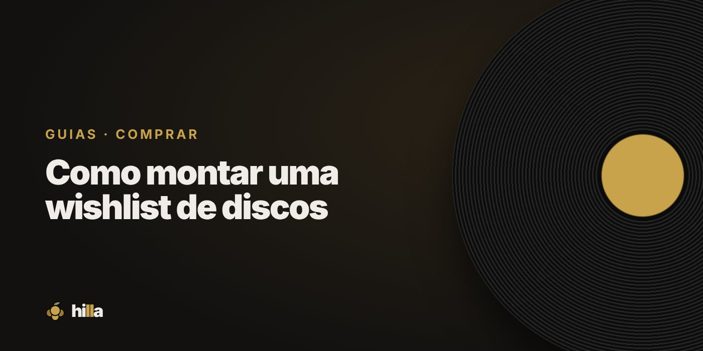

Como montar uma wishlist de discos

Uma boa wishlist é a diferença entre comprar o disco que você queria e voltar do sebo com três que nunca vai ouvir. Ela não precisa ser longa, precisa ser organizada.
Por que ter uma wishlist
- Evita compra por impulso. Você sabe o que procurar.
- Ajuda a aproveitar oportunidades. Achou um disco da lista num bom preço? Compra sem dúvida.
- Vira lista de presentes. Quem quer te dar um disco sabe exatamente o que escolher.
Comece pelo que você já ouve
O melhor ponto de partida é o seu histórico no streaming. Os álbuns que você ouviu inteiros várias vezes são fortes candidatos ao formato físico.
A Hilla faz isso por você: ao importar o que você ouve no Spotify, ela sugere álbuns e explica o motivo de cada sugestão. Também mostra os discos que você ouve e que não estão no streaming, que costumam ser ótimas compras em formato físico.
Olhe para os artistas que você já tem
Se você tem três discos de uma banda, provavelmente quer os outros. As Lacunas da prateleira, na Hilla, mostram os álbuns que faltam dos artistas da sua coleção.
Dê prioridade a cada item
Uma lista sem prioridade vira um depósito. Uma regra simples:
- A: você compraria hoje, se achasse.
- B: quer muito, mas pode esperar um bom preço.
- C: seria legal ter um dia.
Na Hilla, cada item da wishlist tem essa prioridade, e a lista mostra primeiro o que importa mais.
Anote os detalhes que importam
- Formato desejado (vinil, CD).
- Edição específica, se fizer diferença.
- Preço máximo que você pagaria.
Use a lista na hora da compra
- Antes de ir ao sebo ou à feira, revise os itens A.
- No local, consulte a lista pelo celular.
- Comprou? Marque como comprado: na Hilla, o disco sai da wishlist e entra direto na Prateleira.
Revise de tempos em tempos
Gosto muda. Um disco que era prioridade há um ano pode não fazer mais sentido. Uma revisão a cada poucos meses mantém a lista viva. E a cada item comprado, vale comemorar: a Hilla tem até conquista para isso, o Mago da Wishlist.
Organize sua coleção na Hilla
Grátis. Prateleira, wishlist com prioridades e diário de audições, no celular.